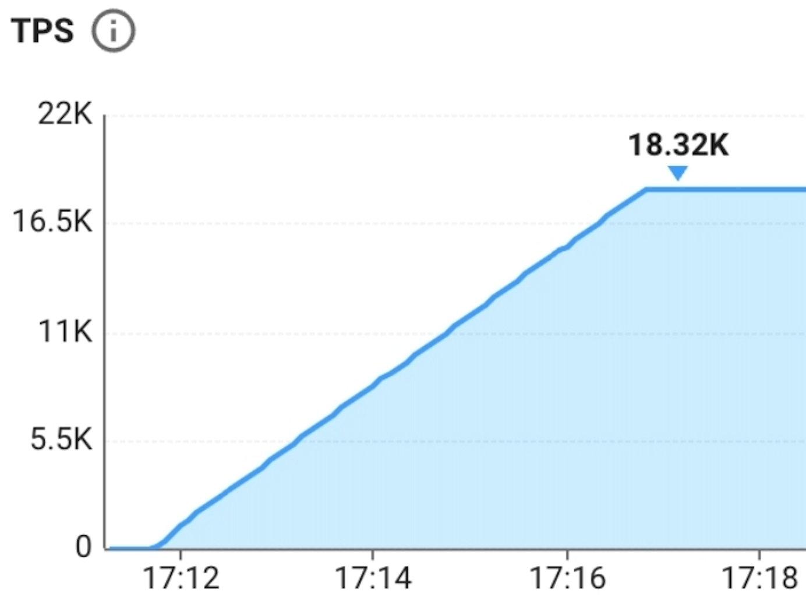
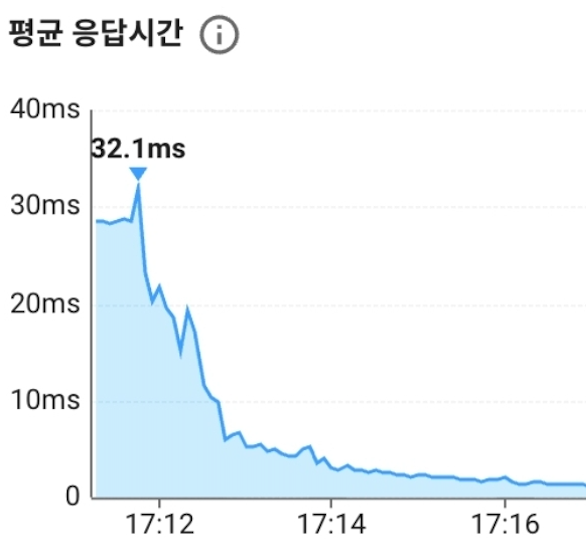
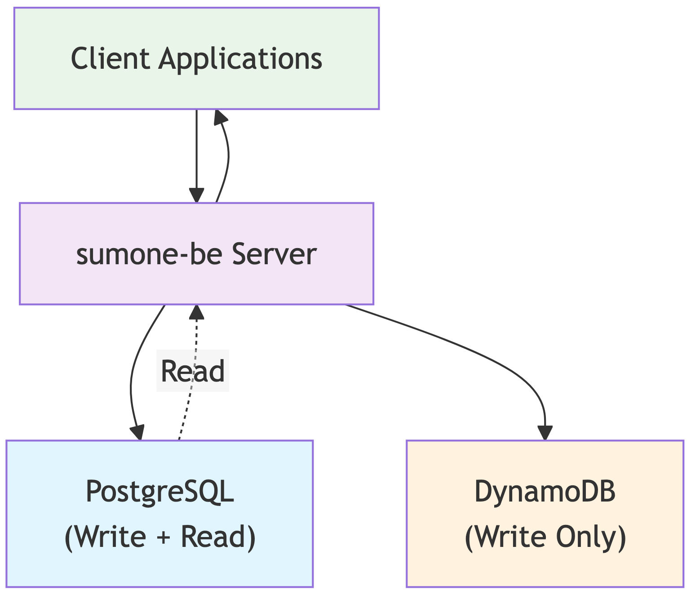
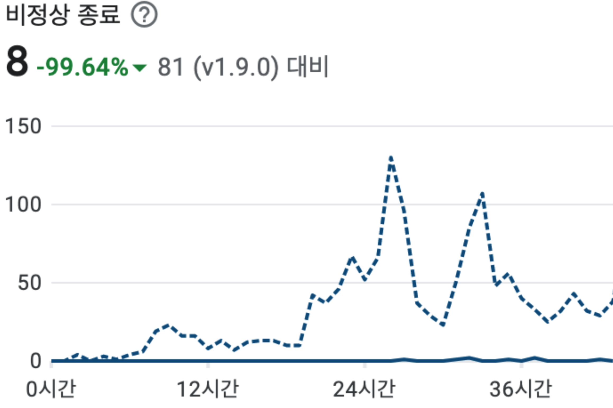
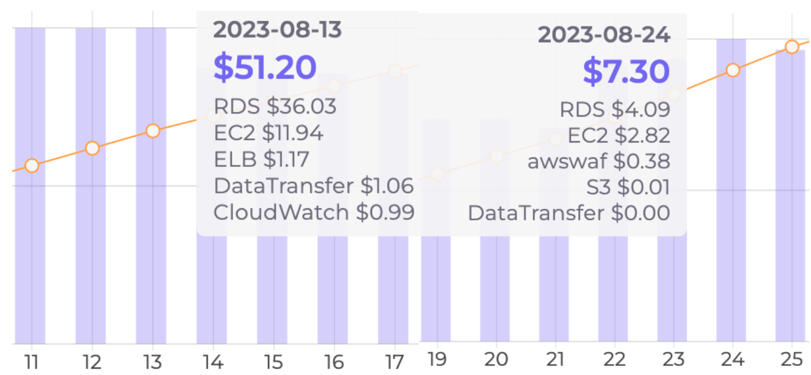
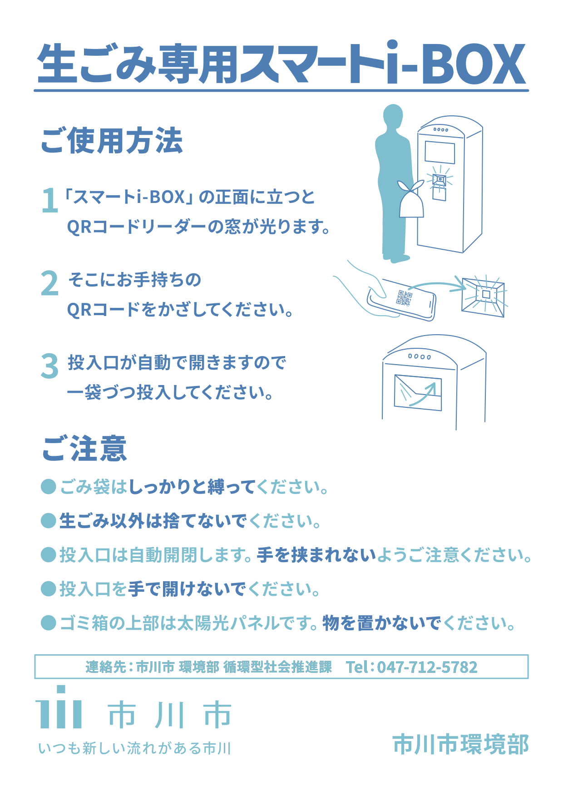

- KCB 휴대폰 인증을 활용한 SBS 가요대전 방청권 신청 시스템 개발 (1.7만 RPS)
- FIU 자료제출에 대비한 회원 데이터 정합성 검증 배치 개발
맡은 제품에 강한 책임감을 가지고 파고드는 개발자 고정완입니다.
4년간 드림포라의 테크리드로 서비스를 바닥부터 만들며 200만 사용자, MAU 16만을 달성했습니다.
4년간 ATDD Cycle을 실천했습니다. 커버리지 보다는 요구사항을 정확히 검증하는 테스트를 추구합니다.
5년간 끊임없이 개발 스터디 활동을 했으며, 동작원리를 깊게 파고드는 공부를 좋아합니다.
스터디 활동을 인정받아 NEXTSTEP과 우아한테크코스에서 전문 리뷰어 활동을 했습니다.
바닐라 언어만으로 프레임워크를 바닥부터 만드는 스터디에 자주 참여합니다.
UNIST 에서 컴퓨터공학과 수리과학을 융합전공하여 성적우수 졸업했습니다.
문제를 풀기 전에, 문제 요구사항을 수학적으로 정의하는 훈련을 받았습니다.
카르다노 에이다를 8년째 보유 중이며, 업비트의 스테이킹 서비스를 2023년 4월 부터 이용해 왔습니다.
회원인증팀 백엔드 개발자
2025.09.01 -
계약직 백엔드 개발자
2025.05.12 - 2025.08.14
백엔드 테크리드
2021.08.25 - 2025.03.25
웹 개발자
2018.10.15 - 2020.12.28
Spring Boot, Spring Security, Spring Batch, JPA
Oracle, MariaDB, DynamoDB
AWS: EC2, RDS, S3, ALB, VPC, CloudFront, Route53, IAM, DMS
CI/CD: Docker, ECS, CodePipeline, Blue-Green, Rolling
쿼리 플랜과 인덱스, DB Cursor
NetFunnel, Rate Limiting, Back Pressure, Redis 캐싱
JUnit, TDD, ATDD, REST Assured, REST Docs
Dreamfora 실무 개발에서 테스트 커버리지 86% 유지
1.7만 RPS 처리 가능한 시스템 구축
KCB, Java, Spring, Aurora, Redis


프로젝트 개요
10분 동안 50만 신청이 예상되는 SBS 방청권 신청 시스템 개발
팀 구성 및 역할
주요 업무
문제 해결 과정
기여 성과
서비스 무중단 마이그레이션
PostgreSQL, DynamoDB, DMS

프로젝트 개요
커플 다이어리 서비스의 전체 회원 데이터를 PostgreSQL에서 DynamoDB로 마이그레이션
팀 구성 및 역할
주요 업무
문제 해결 과정
기여 성과
인증 시간 8초에서 0.1초로 단축
Java, Spring Security, JWT
프로젝트 개요
세션 기반 인증 구조를 JWT 기반 sessionless 형태로 전환하여 인증 성능 개선
팀 구성 및 역할
주요 업무
문제 해결 과정
기여 성과
장애 빈도 99% 감소
EC2, ECS, RDS, S3, ALB, VPC, CloudFront, Route53, IAM

프로젝트 개요
IDC 호스팅에서 AWS 클라우드로 인프라 전환
팀 구성 및 역할
주요 업무
문제 해결 과정
기여 성과
서버 비용 82% 절감
Java, Spring, JPA, MariaDB

프로젝트 개요
재귀 쿼리와 N+1 문제를 해결하기 위한 DB 스키마 재설계 및 성능 최적화
팀 구성 및 역할
주요 업무
문제 해결 과정
기여 성과
인증 서버와 리소스 서버 구축
Express.js, MySQL, JWT, apiDoc
프로젝트 개요
한국 고양시 쓰레기 매립지의 계근 작업 자동화를 위한 RESTful API 개발.
파트너 하드웨어 업체가 계근 데이터를 서버와 동기화하도록 OAuth2 인증 서버와 리소스 서버 구현
팀 구성 및 역할
주요 업무
문제 해결 과정
기여 성과
이치카와시 공공 쓰레기통 유료화
React, TypeScript, Redux

프로젝트 개요
일본 이치카와시에 설치된 스마트 공공 쓰레기통 시스템 개발
쓰레기 배출자를 QR 코드로 인증하고, 배출량에 따라 과금
팀 구성 및 역할
주요 업무
문제 해결 과정
기여 성과
웹/모바일 E2E 테스트 환경 구축
Selenium, Appium, Jest
프로젝트 개요
팀 구성 및 역할
주요 업무
문제 해결 과정
기여 성과
Kotlin 을 교육하며 코드리뷰
2024.02.13 - 2024.06.24
바닐라 자바로 Hibernate 구현
2023.10.14 - 2023.11.25
바닐라 자바로 프레임워크 구현
2022.07.18 - 2022.09.29
객체지향과 TDD 를 교육
2021.03 - 2021.05
공감세미나를 기획하고 개최
2019.03 - 2019.06
ATDD 사이클로 레거시 리팩토링
2025.09.01 - 2025.09.28
Spring Security 바닥부터 구현
2025.02.02 - 2025.03.09
오픈소스 컨트리뷰톤 장려상 수상
2022.06.08 - 2022.11.22
REST Docs로 인수테스트를 문서화
2021.03.07 - 2022.04.18